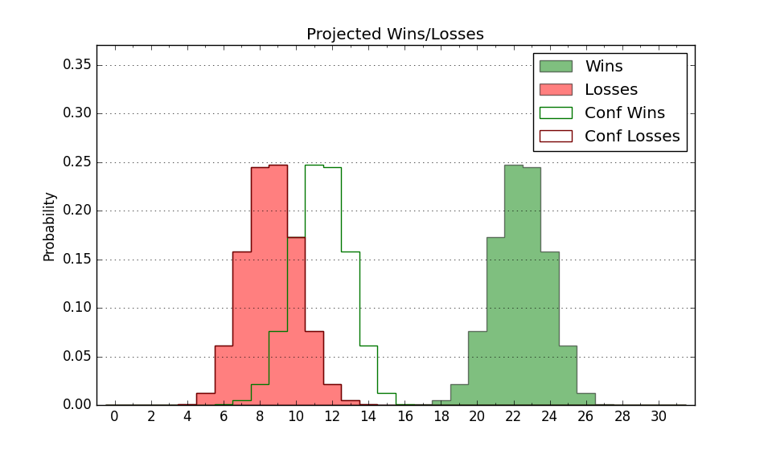

| Home | Game Probabilities | Conferences | Preseason Predictions | Odds Charts | NCAA Tournament |
| City: | Eugene, Oregon | |
| Conference: | Big Ten (8th)
| |
| Record: | 5-4 (Conf) 16-4 (Overall) | |
| Ratings: | Comp.: 22.4 (33rd) Net: 22.7 (33rd) Off: 117.6 (38th) Def: 94.9 (37th) SoR: 89.4 (12th) |
| Remaining | ||||||
|---|---|---|---|---|---|---|
| Date | Opponent | Win Prob | Pred. | |||
| 1/30 | @ UCLA (36) | 37.2% | L 69-73 | |||
| 2/2 | Nebraska (59) | 77.7% | W 78-69 | |||
| 2/5 | @ Michigan (20) | 27.9% | L 75-82 | |||
| 2/8 | @ Michigan St. (19) | 27.7% | L 72-79 | |||
| 2/11 | Northwestern (53) | 75.9% | W 75-67 | |||
| 2/16 | Rutgers (72) | 82.3% | W 83-72 | |||
| 2/19 | @ Iowa (64) | 53.2% | W 83-82 | |||
| 2/22 | @ Wisconsin (18) | 27.7% | L 74-81 | |||
| 3/1 | USC (65) | 80.2% | W 81-71 | |||
| 3/4 | Indiana (67) | 81.3% | W 81-70 | |||
| 3/9 | @ Washington (96) | 68.7% | W 77-71 | |||
| Previous | Game Score | |||||
| Date | Opponent | Win Prob | Result | Off | Def | Net |
| 11/4 | UC Riverside (157) | 93.8% | W 91-76 | 6.1 | -13.8 | -7.7 |
| 11/8 | Montana (210) | 96.2% | W 79-48 | -4.9 | 16.1 | 11.2 |
| 11/12 | Portland (314) | 98.6% | W 80-70 | -29.2 | -2.9 | -32.1 |
| 11/17 | Troy (101) | 89.6% | W 82-61 | -0.0 | 13.3 | 13.3 |
| 11/21 | @Oregon St. (61) | 51.5% | W 78-75 | 6.4 | -2.8 | 3.6 |
| 11/26 | (N) Texas A&M (17) | 40.7% | W 80-70 | 10.8 | 8.8 | 19.6 |
| 11/27 | (N) San Diego St. (47) | 60.9% | W 78-68 | 4.9 | -0.9 | 4.0 |
| 11/30 | (N) Alabama (5) | 23.8% | W 83-81 | 3.3 | 10.8 | 14.1 |
| 12/4 | @USC (65) | 54.3% | W 68-60 | -9.8 | 22.0 | 12.3 |
| 12/8 | UCLA (36) | 66.9% | L 71-73 | 0.9 | -6.3 | -5.4 |
| 12/15 | Stephen F. Austin (234) | 97.1% | W 79-61 | 0.5 | -7.6 | -7.1 |
| 12/21 | (N) Stanford (71) | 71.6% | W 76-61 | -1.8 | 13.2 | 11.4 |
| 12/29 | Weber St. (251) | 97.4% | W 89-49 | -1.7 | 20.4 | 18.7 |
| 1/2 | Illinois (9) | 46.8% | L 77-109 | -6.5 | -32.9 | -39.3 |
| 1/5 | Maryland (15) | 54.2% | W 83-79 | 23.6 | -12.1 | 11.5 |
| 1/9 | @Ohio St. (23) | 31.1% | W 73-71 | -0.5 | 9.5 | 9.0 |
| 1/12 | @Penn St. (48) | 46.3% | W 82-81 | 11.9 | -6.0 | 5.9 |
| 1/18 | Purdue (8) | 46.3% | L 58-65 | -24.8 | 17.1 | -7.7 |
| 1/21 | Washington (96) | 88.2% | W 82-71 | 4.7 | -9.7 | -5.1 |
| 1/25 | @Minnesota (102) | 71.7% | L 69-77 | -4.0 | -18.2 | -22.2 |
| Stats & Trends | |||||
|---|---|---|---|---|---|
| Current | Day | Week | Month | Season | |
| Composite | 22.4 | +0.0 | -0.9 | -3.4 | +5.0 |
| Comp Rank | 33 | -- | -5 | -15 | +6 |
| Net Efficiency | 22.7 | +0.0 | -1.1 | -5.0 | -- |
| Net Rank | 33 | -- | -6 | -18 | -- |
| Off Efficiency | 117.6 | +0.0 | -0.4 | -1.3 | -- |
| Off Rank | 38 | -- | -5 | -12 | -- |
| Def Efficiency | 94.9 | -0.0 | -0.6 | -3.6 | -- |
| Def Rank | 37 | +1 | -6 | -16 | -- |
| SoS Rank | 10 | -1 | +1 | +26 | -- |
| Exp. Wins | 22.4 | +0.0 | -0.9 | -1.2 | +4.1 |
| Exp. Conf Wins | 11.4 | +0.0 | -0.9 | -1.2 | +1.4 |
| Conf Champ Prob | 0.8 | -0.1 | -3.8 | -14.1 | -4.5 |

| Advanced Stats | ||
|---|---|---|
| Stat | Value | Rank |
| Off Eff FG % | 0.567 | 33 |
| Off Ast Ratio | 0.171 | 46 |
| Off ORB% | 0.307 | 138 |
| Off TO Rate | 0.132 | 65 |
| Off FT Ratio | 0.396 | 52 |
| Def Eff FG % | 0.453 | 33 |
| Def Ast Ratio | 0.124 | 45 |
| Def ORB% | 0.258 | 79 |
| Def TO Rate | 0.161 | 98 |
| Def FT Ratio | 0.245 | 16 |